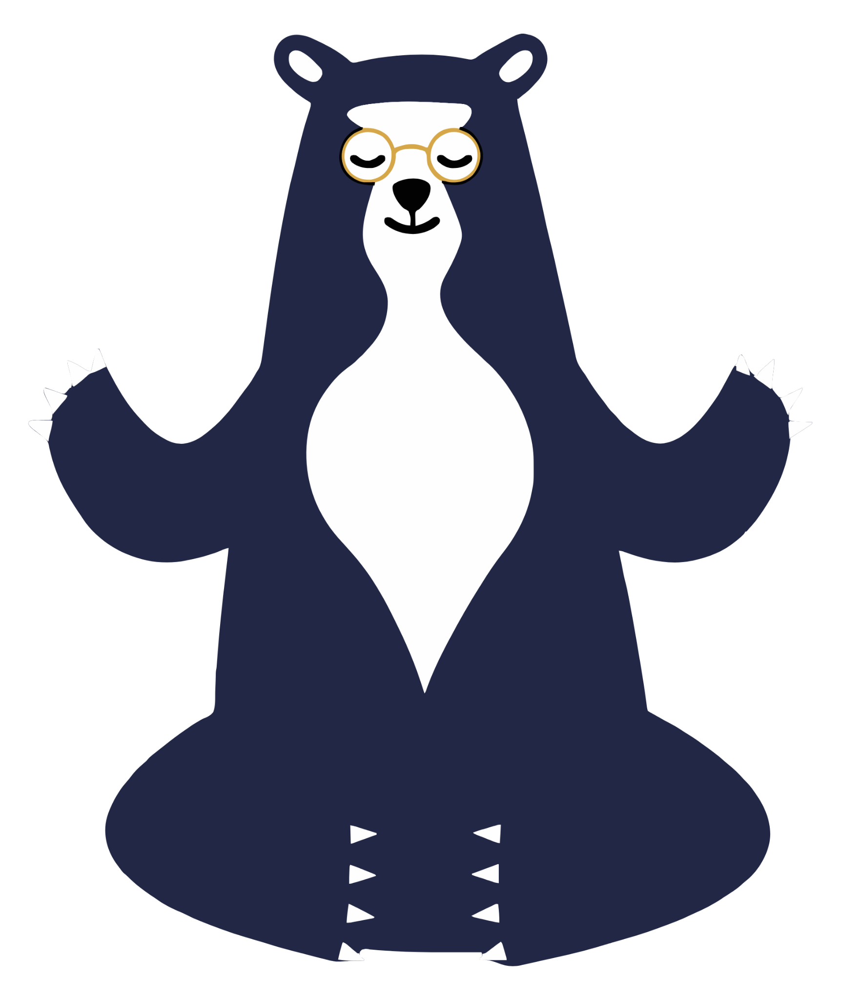

<!DOCTYPE html>
<html lang="es">
<head>
    <meta charset="UTF-8">
    <meta name="viewport" content="width=device-width, initial-scale=1.0">
    <title>OVA: ¿Qué es la OSO?</title>
    
    <!-- Tailwind CSS -->
    <script src="https://cdn.tailwindcss.com"></script>
    <!-- React & ReactDOM -->
    <script crossorigin src="https://unpkg.com/react@18/umd/react.production.min.js"></script>
    <script crossorigin src="https://unpkg.com/react-dom@18/umd/react-dom.production.min.js"></script>
    <!-- Babel for JSX -->
    <script src="https://unpkg.com/@babel/standalone/babel.min.js"></script>

    <script>
        tailwind.config = {
            theme: {
                extend: {
                    colors: {
                        forest: {
                            bg: '#4ade80',
                            dark: '#166534',
                            mid: '#22c55e',
                            light: '#86efac',
                        },
                        paper: '#fefae0',
                        ink: '#1e293b',
                    },
                    fontFamily: {
                        sans: ['"Open Sans"', 'sans-serif'],
                        title: ['"Fredoka One"', '"Comic Sans MS"', 'cursive'],
                    },
                    animation: {
                        'float': 'float 3s ease-in-out infinite',
                        'slide-in': 'slideIn 0.5s ease-out forwards',
                        'fade-in': 'fadeIn 0.3s ease-in forwards',
                        'bounce-slow': 'bounce 2s infinite',
                        'pulse-fast': 'pulse 1s cubic-bezier(0.4, 0, 0.6, 1) infinite',
                    },
                    keyframes: {
                        float: {
                            '0%, 100%': { transform: 'translateY(0)' },
                            '50%': { transform: 'translateY(-10px)' },
                        },
                        slideIn: {
                            '0%': { opacity: '0', transform: 'translateX(50px)' },
                            '100%': { opacity: '1', transform: 'translateX(0)' },
                        },
                        fadeIn: {
                            '0%': { opacity: '0' },
                            '100%': { opacity: '1' },
                        }
                    }
                }
            }
        }

        Babel.registerPreset('react-classic', {
            presets: [[Babel.availablePresets.react, { runtime: 'classic' }]],
        });
    </script>

    <style>
        @import url('https://fonts.googleapis.com/css2?family=Fredoka+One&family=Open+Sans:wght@400;600;700&display=swap');
        
        body {
            font-family: 'Open Sans', sans-serif;
            background-color: #4ade80;
            background: linear-gradient(180deg, #166534 0%, #22c55e 50%, #4ade80 100%);
            margin: 0;
            min-height: 100vh;
            overflow-x: hidden;
        }

        .paper-texture {
            background-color: #fefae0;
            background-image: url("data:image/svg+xml,%3Csvg width='100' height='100' viewBox='0 0 100 100' xmlns='http://www.w3.org/2000/svg'%3E%3Cfilter id='noise'%3E%3CfeTurbulence type='fractalNoise' baseFrequency='0.8' numOctaves='4' stitchTiles='stitch'/%3E%3C/filter%3E%3Crect width='100' height='100' filter='url(%23noise)' opacity='0.05'/%3E%3C/svg%3E");
            box-shadow: 0 10px 25px rgba(0,0,0,0.3);
        }
        
        [bg-trees] {
            position: fixed;
            top: 0;
            left: 0;
            width: 100%;
            height: 100%;
            z-index: 0;
            pointer-events: none;
            background-image: url("data:image/svg+xml,%3Csvg xmlns='http://www.w3.org/2000/svg' viewBox='0 0 1440 320'%3E%3Cpath fill='%23166534' fill-opacity='0.4' d='M0,192L48,197.3C96,203,192,213,288,192C384,171,480,117,576,128C672,139,768,213,864,229.3C960,245,1056,203,1152,176C1248,149,1344,139,1392,133.3L1440,128L1440,0L1392,0C1344,0,1248,0,1152,0C1056,0,960,0,864,0C768,0,672,0,576,0C480,0,384,0,288,0C192,0,96,0,48,0L0,0Z'%3E%3C/path%3E%3C/svg%3E");
            background-repeat: repeat-x;
            background-size: cover;
        }

        .custom-scroll::-webkit-scrollbar { width: 8px; }
        .custom-scroll::-webkit-scrollbar-track { background: #f1e8d9; border-radius: 4px; }
        .custom-scroll::-webkit-scrollbar-thumb { background: #166534; border-radius: 4px; }
    </style>
</head>
<body class="antialiased">
    <div bg-trees></div>
    <div id="root" class="relative z-10 w-full min-h-screen flex items-center justify-center p-4"></div>

    <script type="text/babel" data-presets="react-classic">
        const { useState, useEffect } = React;

        const IconBrain = () => <svg viewBox="0 0 24 24" fill="none" stroke="currentColor" strokeWidth="2" className="w-12 h-12 text-teal-600"><path strokeLinecap="round" strokeLinejoin="round" d="M9.75 17L9 20l-1 1h8l-1-1-.75-3M3 13h18M5 17h14a2 2 0 002-2V5a2 2 0 00-2-2H5a2 2 0 00-2 2v10a2 2 0 002 2z" /><path d="M9 9h6m-6 4h6" /></svg>;
        const IconTarget = () => <svg viewBox="0 0 24 24" fill="none" stroke="currentColor" strokeWidth="2" className="w-12 h-12 text-rose-600"><circle cx="12" cy="12" r="10"/><circle cx="12" cy="12" r="6"/><circle cx="12" cy="12" r="2"/></svg>;
        const IconWorld = () => <svg viewBox="0 0 24 24" fill="none" stroke="currentColor" strokeWidth="2" className="w-12 h-12 text-blue-600"><circle cx="12" cy="12" r="10"/><path d="M2 12h20M12 2a15.3 15.3 0 014 10 15.3 15.3 0 01-4 10 15.3 15.3 0 01-4-10 15.3 15.3 0 014-10z"/></svg>;
        const IconClose = () => <svg viewBox="0 0 24 24" fill="none" stroke="currentColor" strokeWidth="2.5" className="w-5 h-5"><path strokeLinecap="round" strokeLinejoin="round" d="M6 18L18 6M6 6l12 12" /></svg>;
        const IconEye = () => <svg viewBox="0 0 24 24" fill="none" stroke="currentColor" strokeWidth="2" className="w-4 h-4"><path strokeLinecap="round" strokeLinejoin="round" d="M2.458 12C3.732 7.943 7.523 5 12 5c4.478 0 8.268 2.943 9.542 7-1.274 4.057-5.064 7-9.542 7-4.477 0-8.268-2.943-9.542-7z" /><path strokeLinecap="round" strokeLinejoin="round" d="M15 12a3 3 0 11-6 0 3 3 0 016 0z" /></svg>;

        const POPUP_DATA = {
            autoconocimiento: {
                theme: 'teal',
                eyebrow: 'Cartilla 1 · Trayecto 1',
                title: 'Mi historia de vida',
                subtitle: 'Mundo del Autoconocimiento · 9°',
                purpose: 'Conocer tu historia de vida para entender la influencia que tiene en la construcción de tu identidad.',
                steps: [
                    'Identifica los elementos que componen una historia de vida: personajes, momentos importantes, decisiones y aprendizajes.',
                    'Utiliza esos elementos para narrar tu propia historia de vida.',
                    'Establece conexiones entre tu historia y tu identidad.',
                ],
                materials: ['Cuaderno OSO', 'Lápiz y colores', 'Marcadores y pinturas', 'Revistas, tijeras y pegamento'],
                exampleTitle: 'Ejemplo real de la cartilla · Línea de tiempo',
                example: (
                    <div className="space-y-3">
                        <p className="italic text-gray-700 text-sm leading-relaxed">"Soy una joven de 28 años y nací en Tumaco (Nariño). A los 11 años nos fuimos a vivir a Tangareal... Lo que me motivó a estudiar Técnico en Construcción fue la necesidad de demostrar que las mujeres tenemos que ayudar a cambiar y romper pensamientos machistas."</p>
                        <p className="text-xs text-gray-500">— Cristin Yesenia Mosquera Angulo · Escuela Taller de Tumaco (adaptado de la cartilla).</p>
                        <div className="bg-white border border-teal-200 rounded-lg p-3 mt-2">
                            <p className="font-semibold text-teal-800 text-sm mb-2">Dibuja tu propia línea de tiempo e incluye:</p>
                            <ul className="text-sm text-gray-700 space-y-1 list-disc list-inside">
                                <li>Tu nacimiento y los primeros recuerdos.</li>
                                <li>Momentos que te hicieron sentir orgulloso/a.</li>
                                <li>Situaciones que representaron un reto o un miedo.</li>
                                <li>Momentos de felicidad y decisiones importantes.</li>
                            </ul>
                        </div>
                        <p className="text-xs text-gray-600 italic mt-2">Al terminar, envía a tu docente una foto del dibujo y un audio/video de máximo 3 minutos contándole qué fue lo que más te gustó.</p>
                    </div>
                ),
            },
            formacion: {
                theme: 'rose',
                eyebrow: 'Cartilla 2 · Trayecto 3',
                title: 'Explorando el Bosque de la Formación',
                subtitle: 'Mundo de la Formación · 10°',
                purpose: 'Investigar profesiones y ocupaciones para tomar decisiones autónomas sobre tu camino formativo.',
                steps: [
                    'Escoge 2 o 3 carreras u ocupaciones que te llamen la atención.',
                    'Investiga en fuentes confiables (Educaweb, Wikipedia, YouTube y páginas oficiales de universidades).',
                    'Reflexiona sobre su utilidad para la sociedad y para tu comunidad.',
                ],
                materials: ['Cuaderno OSO', 'Acceso a internet', 'Sitios web sugeridos en la cartilla'],
                exampleTitle: 'Preguntas guía y fuentes recomendadas',
                example: (
                    <div className="space-y-3">
                        <div className="bg-white border border-rose-200 rounded-lg p-3">
                            <p className="font-semibold text-rose-800 text-sm mb-2">Preguntas para investigar cada profesión:</p>
                            <ul className="text-sm text-gray-700 space-y-1 list-disc list-inside">
                                <li>¿En qué lugares se desempeñan esos trabajos?</li>
                                <li>¿Qué competencias y conocimientos debo adquirir?</li>
                                <li>¿Cuánto aproximadamente podría ganar?</li>
                                <li>¿Qué problemas buscan resolver?</li>
                                <li>¿Cómo es el estilo de vida de quienes los ejercen?</li>
                                <li>¿Qué retos y dificultades se enfrentan?</li>
                            </ul>
                        </div>
                        <div className="bg-white border border-rose-200 rounded-lg p-3">
                            <p className="font-semibold text-rose-800 text-sm mb-2">Fuentes que sugiere la cartilla:</p>
                            <ul className="text-sm space-y-1">
                                <li><strong className="text-rose-700">Educaweb:</strong> <span className="text-gray-700">educaweb.com/profesiones/ — diccionario de profesiones.</span></li>
                                <li><strong className="text-rose-700">Wikipedia en español:</strong> <span className="text-gray-700">busca la profesión para leer sobre ella.</span></li>
                                <li><strong className="text-rose-700">YouTube:</strong> <span className="text-gray-700">testimonios y contenidos de profesionales.</span></li>
                                <li><strong className="text-rose-700">Páginas universitarias:</strong> <span className="text-gray-700">busca el perfil del egresado (UNAL, UdeA, UdeC…).</span></li>
                                <li><strong className="text-rose-700">Career Profiles:</strong> <span className="text-gray-700">careerprofiles.info — perfiles en inglés.</span></li>
                            </ul>
                        </div>
                    </div>
                ),
            },
            trabajo: {
                theme: 'blue',
                eyebrow: 'Cartilla 3 · Trayecto 2',
                title: 'El Planeta de las Artes y la Comunicación',
                subtitle: 'Mundo del Trabajo · 11° · Juego de mímica',
                purpose: 'Conocer trabajos relacionados con las artes y la comunicación jugando en equipo.',
                steps: [
                    'Reúnete con una o dos personas de confianza que quieran divertirse aprendiendo.',
                    'Cada participante escoge un número del 1 al 15.',
                    'Representa con mímica (sin usar la voz) la ocupación que te tocó.',
                    'Gana un punto quien adivine la profesión; pasa al siguiente turno.',
                ],
                materials: ['Compañeros de juego', 'Cuaderno para anotar los puntajes', 'Ganas de divertirse aprendiendo'],
                exampleTitle: 'Lista de las 15 ocupaciones del juego',
                example: (
                    <div className="grid grid-cols-1 sm:grid-cols-2 gap-2 text-sm text-gray-800">
                        {['Diseñador industrial', 'Diseñador gráfico', 'Ilustrador', 'Diseñador de modas', 'Diseñador de interiores', 'Diseñador textil', 'Fotógrafo', 'Diseñador de joyas', 'Maquillador', 'Músico', 'Editor', 'Bailarín', 'Actor', 'Director de cine', 'Escritor'].map((o, i) => (
                            <div key={i} className="bg-white border border-blue-100 rounded-lg px-3 py-1.5 flex items-center gap-2">
                                <span className="text-xs font-bold text-blue-700 w-5 flex-shrink-0">{i + 1}.</span>
                                <span>{o}</span>
                            </div>
                        ))}
                    </div>
                ),
            },
        };

        const Popup = ({ mundoId, onClose }) => {
            useEffect(() => {
                const handler = (e) => { if (e.key === 'Escape') onClose(); };
                window.addEventListener('keydown', handler);
                return () => window.removeEventListener('keydown', handler);
            }, [onClose]);

            if (!mundoId) return null;
            const data = POPUP_DATA[mundoId];
            if (!data) return null;

            const themeClasses = {
                teal:  { header: 'bg-gradient-to-r from-teal-600 to-teal-700',  stepBg: 'bg-teal-600',  exampleBox: 'bg-teal-50 border-teal-200',  exampleTitle: 'text-teal-800' },
                rose:  { header: 'bg-gradient-to-r from-rose-600 to-rose-700',  stepBg: 'bg-rose-600',  exampleBox: 'bg-rose-50 border-rose-200',  exampleTitle: 'text-rose-800' },
                blue:  { header: 'bg-gradient-to-r from-blue-600 to-blue-700',  stepBg: 'bg-blue-600',  exampleBox: 'bg-blue-50 border-blue-200',  exampleTitle: 'text-blue-800' },
            }[data.theme];

            return (
                <div className="fixed inset-0 z-50 flex items-center justify-center p-4 bg-black/60 backdrop-blur-sm animate-fade-in" onClick={onClose}>
                    <div className="bg-white rounded-3xl shadow-2xl max-w-2xl w-full max-h-[90vh] overflow-hidden flex flex-col animate-slide-in" onClick={(e) => e.stopPropagation()}>
                        <div className={`${themeClasses.header} p-6 text-white flex-shrink-0`}>
                            <div className="flex justify-between items-start gap-4">
                                <div>
                                    <span className="text-xs uppercase tracking-wider opacity-90 font-bold">{data.eyebrow}</span>
                                    <h3 className="font-title text-2xl md:text-3xl mt-1 leading-tight">{data.title}</h3>
                                    <p className="text-sm opacity-90 mt-1">{data.subtitle}</p>
                                </div>
                                <button onClick={onClose} className="text-white hover:bg-white/20 rounded-full p-2 transition flex-shrink-0" aria-label="Cerrar">
                                    <IconClose />
                                </button>
                            </div>
                        </div>
                        <div className="p-6 space-y-5 overflow-y-auto custom-scroll">
                            <div>
                                <h4 className="text-xs font-bold uppercase tracking-wider text-gray-500 mb-2">Propósito</h4>
                                <p className="text-gray-800 text-base leading-relaxed">{data.purpose}</p>
                            </div>
                            <div>
                                <h4 className="text-xs font-bold uppercase tracking-wider text-gray-500 mb-2">¿Cómo lo haremos?</h4>
                                <ol className="space-y-2">
                                    {data.steps.map((step, i) => (
                                        <li key={i} className="flex gap-3 text-gray-800">
                                            <span className={`flex-shrink-0 w-6 h-6 rounded-full ${themeClasses.stepBg} text-white text-xs font-bold flex items-center justify-center mt-0.5`}>{i+1}</span>
                                            <span className="text-base leading-relaxed">{step}</span>
                                        </li>
                                    ))}
                                </ol>
                            </div>
                            {data.materials && (
                                <div>
                                    <h4 className="text-xs font-bold uppercase tracking-wider text-gray-500 mb-2">¿Qué necesitas?</h4>
                                    <div className="flex flex-wrap gap-2">
                                        {data.materials.map((mat, i) => (
                                            <span key={i} className="text-xs bg-gray-100 border border-gray-200 text-gray-700 px-3 py-1 rounded-full">{mat}</span>
                                        ))}
                                    </div>
                                </div>
                            )}
                            {data.example && (
                                <div className={`${themeClasses.exampleBox} p-4 rounded-xl border`}>
                                    <h4 className={`text-xs font-bold uppercase tracking-wider mb-2 ${themeClasses.exampleTitle}`}>{data.exampleTitle}</h4>
                                    <div className="text-sm">{data.example}</div>
                                </div>
                            )}
                        </div>
                        <div className="p-4 border-t border-gray-100 bg-gray-50 flex-shrink-0">
                            <button onClick={onClose} className="w-full sm:w-auto mx-auto block bg-forest-mid hover:bg-forest-bg text-white font-bold px-6 py-2.5 rounded-full transition shadow">
                                Entendido, cerrar
                            </button>
                        </div>
                    </div>
                </div>
            );
        };

const QUIZ_QUESTIONS = [
            {
                question: "¿Cuál es el objetivo principal de la Orientación Socio Ocupacional (OSO)?",
                options: [
                    "Asegurar que todos los jóvenes estudien una carrera profesional universitaria.",
                    "Articular el autoconocimiento, oportunidades de formación y mundo del trabajo para tomar decisiones informadas.",
                    "Encontrar empleo rápidamente para los estudiantes al salir del colegio.",
                    "Mejorar exclusivamente el rendimiento académico en las pruebas de Estado."
                ],
                correctAnswer: 1
            },
            {
                question: "Según el diagnóstico nacional de 2023, ¿qué porcentaje de estudiantes en zonas rurales transita inmediatamente a la educación superior?",
                options: [
                    "Más del 60%",
                    "Aproximadamente el 43.1%",
                    "Menos del 30%",
                    "Cerca del 10%"
                ],
                correctAnswer: 2
            },
            {
                question: "¿Qué mundos explora específicamente la metodología OSO de Enseña por Colombia?",
                options: [
                    "Autoconocimiento, Formación y Trabajo",
                    "Academia, Empleo y Emprendimiento",
                    "Mundo Interno, Mundo Externo y Mundo Futuro",
                    "Universidad, SENA y Sector Privado"
                ],
                correctAnswer: 0
            },
            {
                question: "¿En qué grado escolar se enfoca principalmente 'El Bosque de la Formación' (Mundo de la Formación)?",
                options: [
                    "Grado Octavo",
                    "Grado Noveno",
                    "Grado Décimo",
                    "Grado Undécimo"
                ],
                correctAnswer: 2
            }
        ];

        const App = () => {
            const [currentSlide, setCurrentSlide] = useState(0);
            const [isQuizMode, setIsQuizMode] = useState(false);
            const [activePopup, setActivePopup] = useState(null);
            const [quizState, setQuizState] = useState({
                currentQuestion: 0,
                score: 0,
                showResults: false,
                selectedAnswer: null,
                isCorrect: null
            });

            const openPopup = (id) => setActivePopup(id);
            const closePopup = () => setActivePopup(null);

            const CONTENT_SLIDES = [
                {
                    id: 'intro',
                    title: '¿Qué es la OSO?',
                    content: (
                        <div className="space-y-5">
                            <p className="text-lg leading-relaxed">
                                La <strong>Orientación Socio Ocupacional (OSO)</strong> es un test vocacional que te ayuda a decidir qué estudiar y a qué dedicarte. Pero, sobre todo, es una estrategia integral para que construyas tu proyecto de vida con información, autoconocimiento y propósito.
                            </p>
                            <div className="bg-yellow-50 p-4 rounded-xl border border-yellow-200 shadow-inner">
                                <p className="font-medium text-yellow-900 italic text-lg">
                                    "El conjunto de procesos y estrategias de acompañamiento a las personas, que les permite articular el conocimiento sobre sí mismos, sobre las oportunidades de formación, y sobre el mundo del trabajo, para tomar decisiones informadas y racionales con miras a construir una trayectoria de vida/formación/trabajo satisfactorio para sí mismos y que aporte al desarrollo y bienestar de la sociedad."
                                </p>
                                <p className="text-right text-sm mt-2 text-yellow-700 font-bold">- Ministerio de Educación Nacional (2012)</p>
                            </div>
                            <p className="text-lg">Nuestro objetivo es acompañar a las juventudes a explorar y planificar su futuro reconociendo su contexto y las oportunidades reales que tienen a su alcance.</p>
                        </div>
                    )
                },
                {
                    id: 'urgencia',
                    title: 'El Sentido de Urgencia',
                    content: (
                        <div className="space-y-4">
                            <p className="text-lg leading-relaxed">
                                ¿Por qué necesitamos la OSO con tanta urgencia en Colombia? Las cifras nos muestran una realidad que nos convoca a actuar:
                            </p>
                            <div className="grid grid-cols-1 md:grid-cols-2 gap-4">
                                <div className="bg-red-50 p-5 rounded-xl border border-red-200 transition hover:shadow-lg">
                                    <div className="text-4xl font-title text-red-600 mb-2">43.1%</div>
                                    <p className="text-sm text-red-900 font-medium">De estudiantes transitaron inmediatamente a educación superior en 2023. ¡En zonas rurales esta cifra es menor al 30%!</p>
                                </div>
                                <div className="bg-orange-50 p-5 rounded-xl border border-orange-200 transition hover:shadow-lg">
                                    <div className="text-4xl font-title text-orange-600 mb-2">&gt; 40%</div>
                                    <p className="text-sm text-orange-900 font-medium">De estudiantes de 9° y 10° no logran identificar programas alineados a sus intereses o desconocen los requisitos de ingreso.</p>
                                </div>
                            </div>
                            <p className="text-md font-medium mt-4 bg-white/70 p-4 rounded-lg border border-gray-200 text-ink">
                                La falta de información y acompañamiento limita los sueños. La OSO es el puente para que los jóvenes construyan trayectorias con propósito.
                            </p>
                            <p className="text-xs text-gray-500 italic mt-2 border-t border-gray-200 pt-3">
                                <strong>Fuente:</strong> Encuesta OSO — Enseña por Colombia (2024), aplicada a 577 estudiantes entre 8° y 11° durante el primer semestre de 2024. Cifra de tránsito inmediato a educación superior (2023) según Ministerio de Educación Nacional.
                            </p>
                        </div>
                    )
                },
                {
                    id: 'mundos',
                    title: 'Los 3 Mundos de la OSO',
                    content: (
                        <div className="space-y-5">
                            <p className="text-lg">Para orientar decisiones asertivas, viajaremos y exploraremos tres mundos fundamentales. Toca cada tarjeta para ver una actividad real extraída de la cartilla:</p>

                            {/* Autoconocimiento */}
                            <div className="bg-white p-4 rounded-xl shadow-sm border-l-4 border-l-teal-500 hover:shadow-md transition">
                                <div className="flex gap-4 items-start mb-3">
                                    <div className="flex-shrink-0 mt-1"><IconBrain /></div>
                                    <div className="flex-1">
                                        <h3 className="font-title text-teal-700 text-lg">Mundo del Autoconocimiento (9°)</h3>
                                        <p className="text-sm text-gray-600">Reconocer intereses, habilidades, historia de vida y valores. ¿Quién soy y pa' dónde voy?</p>
                                    </div>
                                </div>
                                <p className="text-xs font-bold text-teal-700 uppercase tracking-wide mb-1.5">Ejemplos de actividades</p>
                                <div className="flex flex-wrap gap-1.5 mb-3">
                                    <span className="text-xs bg-teal-50 text-teal-800 border border-teal-200 px-2.5 py-1 rounded-full">Mi línea de vida</span>
                                    <span className="text-xs bg-teal-50 text-teal-800 border border-teal-200 px-2.5 py-1 rounded-full">Mapa de sueños y metas</span>
                                    <span className="text-xs bg-teal-50 text-teal-800 border border-teal-200 px-2.5 py-1 rounded-full">Taller de sueños</span>
                                    <span className="text-xs bg-teal-50 text-teal-800 border border-teal-200 px-2.5 py-1 rounded-full">Mi hoja de vida</span>
                                </div>
                                <button
                                    onClick={() => openPopup('autoconocimiento')}
                                    className="inline-flex items-center gap-2 text-sm font-bold text-white bg-teal-600 hover:bg-teal-700 px-4 py-2 rounded-full transition shadow hover:shadow-md"
                                >
                                    <IconEye /> Ver actividad de la cartilla
                                </button>
                            </div>

                            {/* Formación */}
                            <div className="bg-white p-4 rounded-xl shadow-sm border-l-4 border-l-rose-500 hover:shadow-md transition">
                                <div className="flex gap-4 items-start mb-3">
                                    <div className="flex-shrink-0 mt-1"><IconTarget /></div>
                                    <div className="flex-1">
                                        <h3 className="font-title text-rose-700 text-lg">Mundo de la Formación (10°)</h3>
                                        <p className="text-sm text-gray-600">Navegar el sistema educativo, requisitos e investigación de carreras. ¿Quién soy y qué quiero aprender?</p>
                                    </div>
                                </div>
                                <p className="text-xs font-bold text-rose-700 uppercase tracking-wide mb-1.5">Ejemplos de actividades</p>
                                <div className="flex flex-wrap gap-1.5 mb-3">
                                    <span className="text-xs bg-rose-50 text-rose-800 border border-rose-200 px-2.5 py-1 rounded-full">Grandes preguntas vocacionales</span>
                                    <span className="text-xs bg-rose-50 text-rose-800 border border-rose-200 px-2.5 py-1 rounded-full">Investigación de carreras</span>
                                    <span className="text-xs bg-rose-50 text-rose-800 border border-rose-200 px-2.5 py-1 rounded-full">Requisitos educación posmedia</span>
                                    <span className="text-xs bg-rose-50 text-rose-800 border border-rose-200 px-2.5 py-1 rounded-full">Feria universitaria</span>
                                </div>
                                <button
                                    onClick={() => openPopup('formacion')}
                                    className="inline-flex items-center gap-2 text-sm font-bold text-white bg-rose-600 hover:bg-rose-700 px-4 py-2 rounded-full transition shadow hover:shadow-md"
                                >
                                    <IconEye /> Ver actividad de la cartilla
                                </button>
                            </div>

                            {/* Trabajo */}
                            <div className="bg-white p-4 rounded-xl shadow-sm border-l-4 border-l-blue-500 hover:shadow-md transition">
                                <div className="flex gap-4 items-start mb-3">
                                    <div className="flex-shrink-0 mt-1"><IconWorld /></div>
                                    <div className="flex-1">
                                        <h3 className="font-title text-blue-700 text-lg">Mundo del Trabajo (11°)</h3>
                                        <p className="text-sm text-gray-600">Aproximación práctica al sector productivo y apuestas regionales. ¿Quién soy y qué le sumo al mundo?</p>
                                    </div>
                                </div>
                                <p className="text-xs font-bold text-blue-700 uppercase tracking-wide mb-1.5">Ejemplos de actividades</p>
                                <div className="flex flex-wrap gap-1.5 mb-3">
                                    <span className="text-xs bg-blue-50 text-blue-800 border border-blue-200 px-2.5 py-1 rounded-full">Visitas empresariales</span>
                                    <span className="text-xs bg-blue-50 text-blue-800 border border-blue-200 px-2.5 py-1 rounded-full">Job shadowing</span>
                                    <span className="text-xs bg-blue-50 text-blue-800 border border-blue-200 px-2.5 py-1 rounded-full">Romper el techo de cristal</span>
                                    <span className="text-xs bg-blue-50 text-blue-800 border border-blue-200 px-2.5 py-1 rounded-full">Apuestas productivas de la región</span>
                                </div>
                                <button
                                    onClick={() => openPopup('trabajo')}
                                    className="inline-flex items-center gap-2 text-sm font-bold text-white bg-blue-600 hover:bg-blue-700 px-4 py-2 rounded-full transition shadow hover:shadow-md"
                                >
                                    <IconEye /> Ver actividad de la cartilla
                                </button>
                            </div>
                        </div>
                    )
                }
            ];

            const nextSlide = () => {
                if (currentSlide < CONTENT_SLIDES.length - 1) {
                    setCurrentSlide(curr => curr + 1);
                } else {
                    setIsQuizMode(true);
                }
            };

            const prevSlide = () => {
                if (currentSlide > 0) {
                    setCurrentSlide(curr => curr - 1);
                }
            };

            const resetApp = () => {
                setCurrentSlide(0);
                setIsQuizMode(false);
                setQuizState({
                    currentQuestion: 0,
                    score: 0,
                    showResults: false,
                    selectedAnswer: null,
                    isCorrect: null
                });
            };

            const handleAnswer = (index) => {
                if (quizState.selectedAnswer !== null) return;

                const isCorrect = index === QUIZ_QUESTIONS[quizState.currentQuestion].correctAnswer;
                
                setQuizState(prev => ({
                    ...prev,
                    selectedAnswer: index,
                    isCorrect: isCorrect,
                    score: isCorrect ? prev.score + 1 : prev.score
                }));

                setTimeout(() => {
                    if (quizState.currentQuestion < QUIZ_QUESTIONS.length - 1) {
                        setQuizState(prev => ({
                            ...prev,
                            currentQuestion: prev.currentQuestion + 1,
                            selectedAnswer: null,
                            isCorrect: null
                        }));
                    } else {
                        setQuizState(prev => ({ ...prev, showResults: true }));
                    }
                }, 2500);
            };

            const renderPresentation = () => (
                <div className="w-full min-h-screen flex flex-col md:flex-row bg-paper paper-texture shadow-2xl overflow-hidden animate-slide-in relative">
                    
                    {/* Panel lateral izquierdo - Ahora ocupa toda la altura disponible */}
                    <div className="bg-white w-full md:w-1/3 lg:w-1/4 p-8 flex flex-col items-center justify-center md:justify-between text-forest-dark shadow-xl z-20 relative border-r-4">
                        <div className="text-center md:mt-8">
                            <span className="bg-yellow-400 text-forest-dark text-xs font-bold px-4 py-1.5 rounded-full uppercase tracking-wider mb-6 inline-block shadow-md">Módulo 1</span>
                            <h2 className="font-title text-3xl lg:text-4xl text-forest-dark leading-tight">Panorama<br/>General</h2>
                        </div>
                        
                        
                        
                        <div className="w-full bg-forest-dark/5 p-5 rounded-2xl border border-forest-dark/20 md:mb-8">
                            <div className="flex justify-between text-sm mb-3 font-semibold text-forest-dark">
                                <span className="uppercase tracking-wider">Progreso</span>
                                <span>{currentSlide + 1} / {CONTENT_SLIDES.length}</span>
                            </div>
                            <div className="w-full bg-forest-dark/15 rounded-full h-3 shadow-inner">
                                <div 
                                    className="bg-gradient-to-r from-yellow-300 to-yellow-500 h-3 rounded-full transition-all duration-700 ease-out shadow-[0_0_10px_rgba(234,179,8,0.5)]"
                                    style={{ width: `${((currentSlide + 1) / CONTENT_SLIDES.length) * 100}%` }}
                                ></div>
                            </div>
                        </div>
                    </div>

                    {/* Área de contenido derecho - Fluida y espaciosa */}
                    <div className="flex-1 p-6 sm:p-10 md:p-16 lg:p-24 flex flex-col justify-between relative overflow-y-auto z-10 bg-white/40 backdrop-blur-sm">
                        <div className="md:hidden flex items-center justify-between mb-8 bg-forest-dark text-white p-4 rounded-2xl shadow-lg border border-white/10">
                            <span className="font-title text-base">Módulo 1: Panorama General</span>
                            <span className="text-sm font-bold bg-white/20 px-3 py-1 rounded-lg backdrop-blur-sm">{currentSlide + 1} / {CONTENT_SLIDES.length}</span>
                        </div>

                        <div className="flex-1 w-full max-w-4xl mx-auto flex flex-col justify-center" key={`slide-${currentSlide}`}>
                            <h1 className="text-4xl sm:text-5xl lg:text-6xl font-title text-forest-dark mb-8 border-b-4 border-forest-light pb-6 drop-shadow-sm leading-tight">
                                {CONTENT_SLIDES[currentSlide].title}
                            </h1>
                            <div className="text-ink/90 animate-fade-in text-lg sm:text-xl lg:text-2xl leading-relaxed">
                                {CONTENT_SLIDES[currentSlide].content}
                            </div>
                        </div>

                        {/* Controles de navegación - Pegados al fondo del área de contenido */}
                        <div className="flex justify-between items-center mt-12 pt-8 border-t-2 border-gray-200/50 w-full max-w-4xl mx-auto">
                            <button 
                                onClick={prevSlide}
                                disabled={currentSlide === 0}
                                className={`px-6 sm:px-8 py-3 sm:py-4 rounded-full font-bold text-lg transition-all ${currentSlide === 0 ? 'opacity-0 cursor-default' : 'bg-white text-gray-700 hover:bg-gray-100 hover:text-forest-dark shadow-md hover:shadow-lg border border-gray-200'}`}
                            >
                                Anterior
                            </button>
                            <button 
                                onClick={nextSlide}
                                className={`font-title px-8 sm:px-10 py-4 sm:py-5 rounded-full transition-all flex items-center gap-3 text-white text-lg sm:text-xl ${
                                    currentSlide === CONTENT_SLIDES.length - 1 
                                    ? 'bg-gradient-to-r from-yellow-400 to-yellow-500 hover:from-yellow-300 hover:to-yellow-400 text-yellow-900 shadow-[0_6px_0_#a16207] hover:shadow-[0_3px_0_#a16207] active:translate-y-3 active:shadow-none animate-bounce' 
                                    : 'bg-gradient-to-r from-forest-mid to-forest-dark hover:from-forest-light hover:to-forest-mid shadow-[0_6px_0_#166534] hover:shadow-[0_3px_0_#166534] active:translate-y-3 active:shadow-none'
                                }`}
                            >
                                {currentSlide === CONTENT_SLIDES.length - 1 ? '¡Ir al Reto! 🏆' : 'Siguiente ➔'}
                            </button>
                        </div>
                    </div>
                </div>
            );

            const renderQuiz = () => {
                if (quizState.showResults) {
                    const isPassed = quizState.score >= 3;
                    return (
                        <div className="w-full min-h-screen flex items-center justify-center bg-paper paper-texture p-6 animate-fade-in relative z-20">
                            <div className="w-full max-w-3xl bg-white/90 backdrop-blur-md rounded-[3rem] shadow-2xl border-4 border-white p-10 md:p-16 text-center">
                                <h2 className="text-4xl md:text-5xl font-title text-forest-dark mb-6 drop-shadow-sm">¡Reto Finalizado!</h2>
                                
                                <div className="my-12 relative">
                                    <div className={`absolute inset-0 rounded-full blur-2xl opacity-60 animate-pulse ${isPassed ? 'bg-green-400' : 'bg-orange-400'}`}></div>
                                    <div className={`relative w-56 h-56 md:w-64 md:h-64 mx-auto rounded-full flex flex-col items-center justify-center border-8 shadow-[inset_0_0_30px_rgba(0,0,0,0.1)] bg-white ${isPassed ? 'border-green-500' : 'border-orange-500'}`}>
                                        <span className="text-base font-bold text-gray-500 uppercase tracking-widest mb-2">Puntaje Final</span>
                                        <span className="text-7xl md:text-8xl font-title text-ink drop-shadow-md">{quizState.score}<span className="text-4xl md:text-5xl text-gray-400">/{QUIZ_QUESTIONS.length}</span></span>
                                    </div>
                                </div>

                                <p className="text-2xl md:text-3xl text-ink/80 mb-12 font-medium px-4 leading-relaxed">
                                    {isPassed 
                                        ? "¡Excelente trabajo! Tienes muy claros los conceptos clave y el sentido de urgencia de la OSO. ¡Estás listo para guiar a otros!" 
                                        : "¡Buen intento! Te recomendamos repasar los conceptos del Módulo 1 para afianzar mejor las bases metodológicas."}
                                </p>

                                <button 
                                    onClick={resetApp}
                                    className="bg-forest-mid hover:bg-forest-bg text-white font-title text-xl px-10 py-5 rounded-full shadow-[0_6px_0_#166534] hover:translate-y-1 hover:shadow-[0_3px_0_#166534] active:shadow-none active:translate-y-3 transition-all inline-flex items-center gap-3"
                                >
                                    <span>Volver a la Presentación</span> ↺
                                </button>
                            </div>
                        </div>
                    );
                }

                const question = QUIZ_QUESTIONS[quizState.currentQuestion];

                return (
                    <div className="w-full min-h-screen flex flex-col bg-transparent relative z-20 animate-fade-in">
                        {/* Cabecera Panorámica del Quiz */}
                        <div className="w-full bg-forest-dark/95 backdrop-blur-md p-6 md:p-8 flex flex-col sm:flex-row justify-between items-center text-white gap-6 shadow-2xl border-b border-forest-light/30 sticky top-0 z-30">
                            <div className="flex items-center gap-4">
                                <div className="bg-yellow-400/20 p-3 rounded-2xl border border-yellow-400/30">
                                    <span className="text-3xl md:text-4xl">🏆</span>
                                </div>
                                <div>
                                    <span className="font-title text-2xl md:text-3xl tracking-wide drop-shadow-md block">Reto de Conocimiento</span>
                                    <span className="text-forest-light text-sm font-medium">Módulo 1: La OSO</span>
                                </div>
                            </div>
                            
                            <div className="flex flex-col items-end gap-2 w-full sm:w-1/3 md:w-1/4">
                                <span className="text-base font-bold text-gray-200 uppercase tracking-wider">
                                    Pregunta {quizState.currentQuestion + 1} de {QUIZ_QUESTIONS.length}
                                </span>
                                <div className="w-full bg-black/50 rounded-full h-3 shadow-inner">
                                    <div 
                                        className="bg-gradient-to-r from-yellow-300 to-yellow-500 h-3 rounded-full transition-all duration-500 shadow-[0_0_10px_rgba(234,179,8,0.5)]"
                                        style={{ width: `${((quizState.currentQuestion + 1) / QUIZ_QUESTIONS.length) * 100}%` }}
                                    ></div>
                                </div>
                            </div>
                        </div>

                        {/* Área de Pregunta y Opciones - Espaciosa y Centrada */}
                        <div className="flex-1 w-full max-w-5xl mx-auto p-6 md:p-12 flex flex-col justify-center pb-32">
                            
                            <div className="bg-white/90 backdrop-blur-xl p-8 md:p-12 rounded-[2rem] shadow-xl border border-white/50 mb-10 transform transition-all hover:shadow-2xl">
                                <h2 className="text-2xl md:text-3xl lg:text-4xl font-bold text-ink leading-tight text-center">
                                    {question.question}
                                </h2>
                            </div>

                            <div className="grid grid-cols-1 gap-5 md:gap-6">
                                {question.options.map((option, index) => {
                                    let btnClass = "w-full text-left p-6 md:p-8 rounded-2xl border-4 transition-all duration-300 font-semibold text-xl md:text-2xl relative overflow-hidden shadow-lg ";
                                    
                                    if (quizState.selectedAnswer === null) {
                                        btnClass += "border-transparent bg-white hover:border-forest-mid hover:bg-forest-50 hover:shadow-xl cursor-pointer hover:-translate-y-2 hover:scale-[1.01]";
                                    } else {
                                        if (index === question.correctAnswer) {
                                            btnClass += "border-green-500 bg-green-50 text-green-900 shadow-[0_10px_30px_rgba(34,197,94,0.3)] z-10 scale-[1.03] ring-4 ring-green-500/20";
                                        } else if (index === quizState.selectedAnswer) {
                                            btnClass += "border-red-500 bg-red-50 text-red-900 opacity-90 scale-95 shadow-inner";
                                        } else {
                                            btnClass += "border-transparent bg-white/60 text-gray-400 opacity-50 grayscale";
                                        }
                                    }

                                    return (
                                        <button 
                                            key={index}
                                            onClick={() => handleAnswer(index)}
                                            disabled={quizState.selectedAnswer !== null}
                                            className={btnClass}
                                        >
                                            <div className="flex items-center z-10 relative">
                                                <span className={`flex-shrink-0 w-12 h-12 md:w-14 md:h-14 rounded-full flex items-center justify-center mr-6 font-bold text-lg md:text-xl transition-colors shadow-inner ${quizState.selectedAnswer !== null && index === question.correctAnswer ? 'bg-green-500 text-white shadow-green-700/50' : 'bg-gray-100 text-gray-500 shadow-gray-300/50'}`}>
                                                    {String.fromCharCode(65 + index)}
                                                </span>
                                                <span className="leading-snug">{option}</span>
                                            </div>
                                        </button>
                                    );
                                })}
                            </div>

                        </div>
                        
                        {/* Feedback Flotante - Posicionado fijamente en la parte inferior */}
                        {quizState.selectedAnswer !== null && (
                            <div className="fixed bottom-8 left-0 right-0 z-50 flex justify-center px-4 pointer-events-none">
                                <div className={`px-8 py-5 md:px-10 md:py-6 rounded-2xl shadow-2xl border-4 animate-slide-in flex items-center gap-4 max-w-2xl w-full backdrop-blur-md transform transition-all ${quizState.isCorrect ? 'bg-green-100/95 text-green-900 border-green-500' : 'bg-red-100/95 text-red-900 border-red-500'}`}>
                                    {quizState.isCorrect ? (
                                        <><svg className="w-10 h-10 md:w-12 md:h-12 text-green-600 flex-shrink-0 drop-shadow-md" fill="none" viewBox="0 0 24 24" stroke="currentColor"><path strokeLinecap="round" strokeLinejoin="round" strokeWidth="3" d="M5 13l4 4L19 7"/></svg> 
                                        <span className="text-xl md:text-2xl font-bold">¡Excelente! Respuesta correcta.</span></>
                                    ) : (
                                        <><svg className="w-10 h-10 md:w-12 md:h-12 text-red-600 flex-shrink-0 drop-shadow-md" fill="none" viewBox="0 0 24 24" stroke="currentColor"><path strokeLinecap="round" strokeLinejoin="round" strokeWidth="3" d="M6 18L18 6M6 6l12 12"/></svg> 
                                        <span className="text-xl md:text-2xl font-bold">Respuesta incorrecta.</span></>
                                    )}
                                </div>
                            </div>
                        )}
                    </div>
                );
            };

            return (
                <div className="w-full min-h-screen">
                    {!isQuizMode ? renderPresentation() : renderQuiz()}
                    <Popup mundoId={activePopup} onClose={closePopup} />
                </div>
            );
        };

        const root = ReactDOM.createRoot(document.getElementById('root'));
        root.render(<App />);
    </script>
</body>
</html>
